Procedure
Step 1: Open oxygen valve
Turn the torch’s purple knob to open the oxygen valve before setting cylinder pressure.
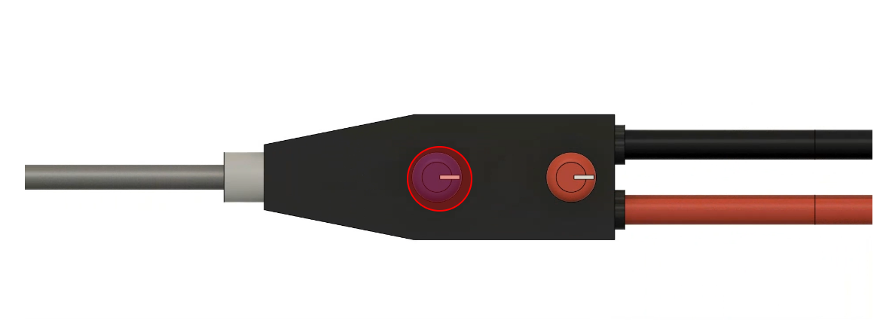
Step 2: Set oxygen pressure
Rotate the regulator handle and set the oxygen cylinder to 15 PSI on the gauge.
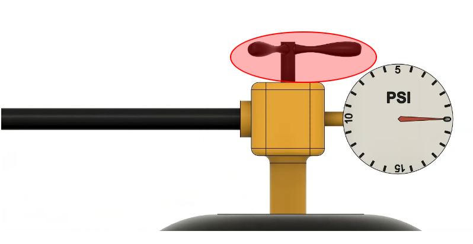
Step 3: Close oxygen valve at torch
Close the oxygen control on the torch to stop flow after the cylinder pressure is adjusted.
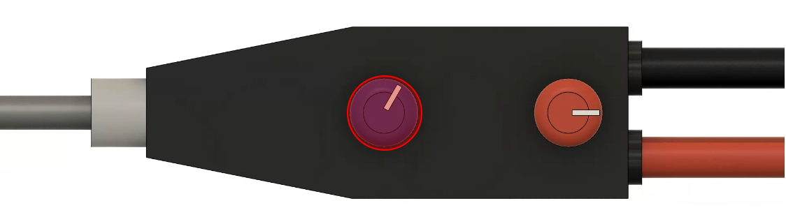
Step 4: Open acetylene valve
Turn the red knob on the torch to open the acetylene valve before setting its pressure.
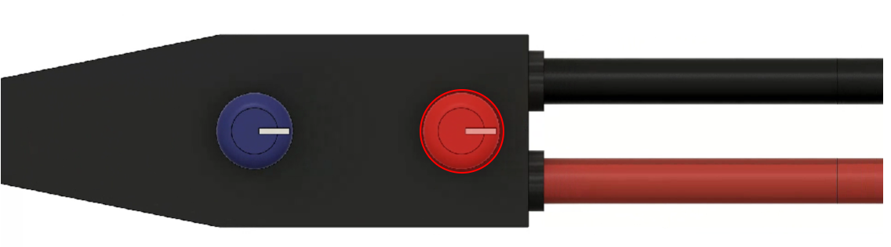
Step 5: Set acetylene pressure
Adjust the acetylene regulator so the gauge reads 3 PSI for safe operation.
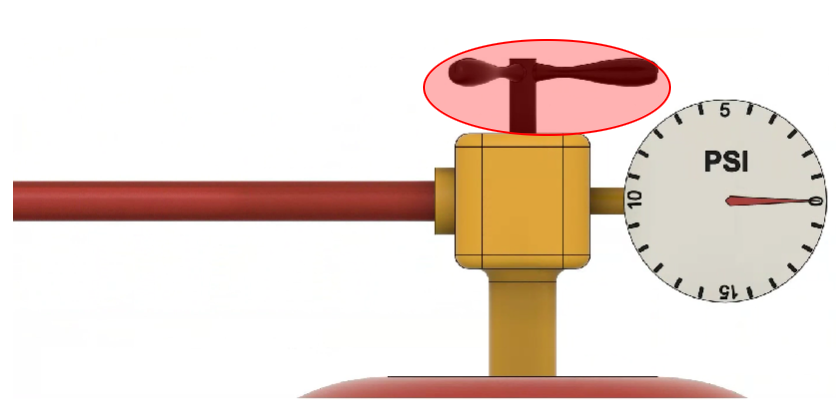
Step 6: Bring lighter near tip
Drag the spark lighter close to the torch tip to prepare for ignition.
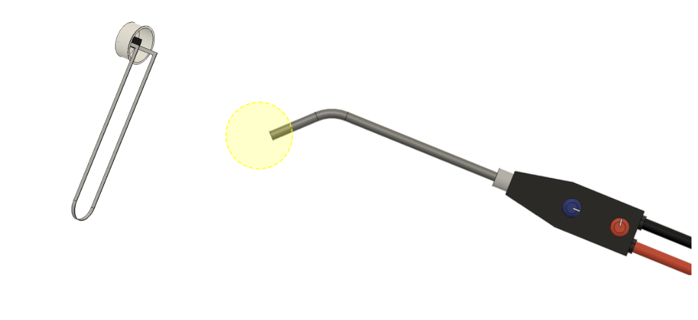
Step 7: Ignite the torch
Click on the lighter to produce a spark and ignite the acetylene gas.
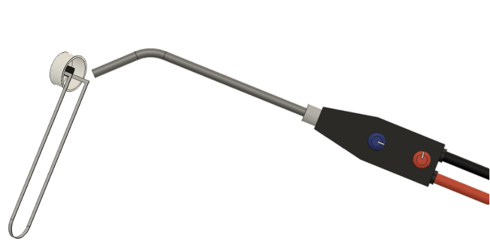
Step 8: Carburizing flame
With more acetylene and less oxygen, a reddish carburizing flame is obtained at the tip.
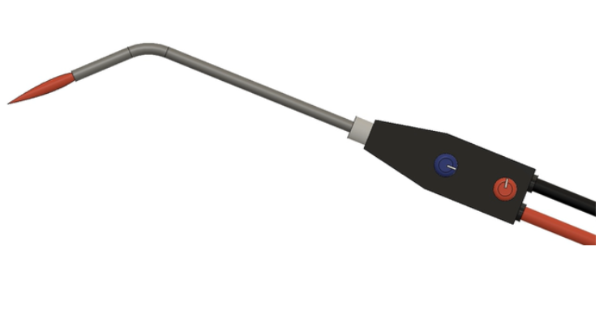
Step 9: Neutral flame
Increase the oxygen slightly until a well‑defined inner cone shows a neutral flame.
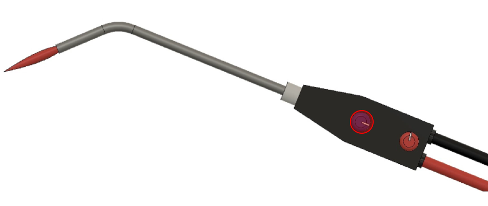
Step 10: Oxidizing flame
Further increase oxygen to get a shorter, sharper oxidizing flame suitable for specific operations.
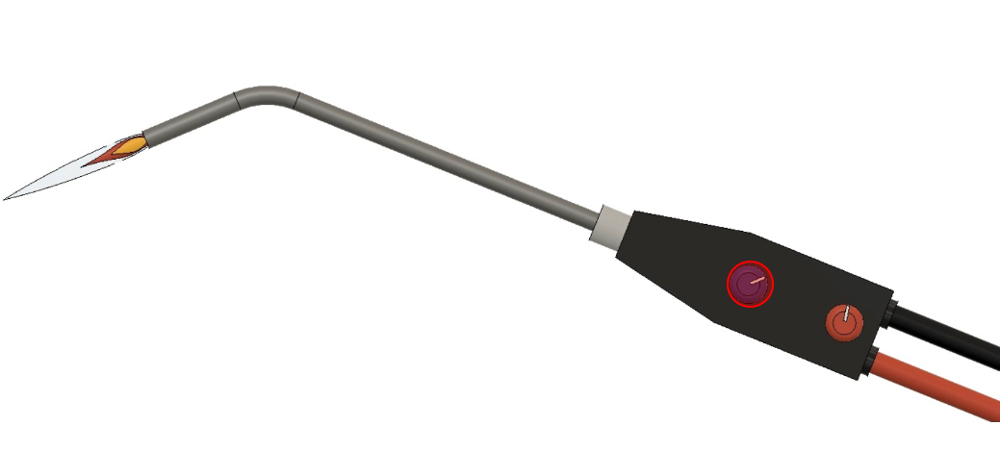
Step 11: Close oxygen valve
Finally, close the oxygen valve on the torch and cylinders to make the setup safe.
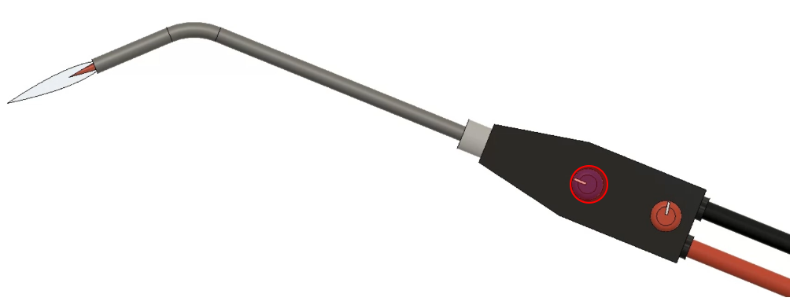
Step 12: Close acetylene valve
To shut down, first close the acetylene valve on the torch to extinguish the flame.
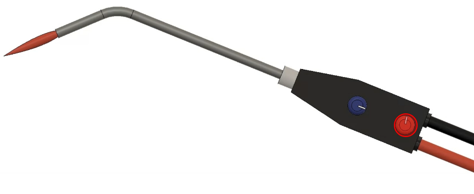